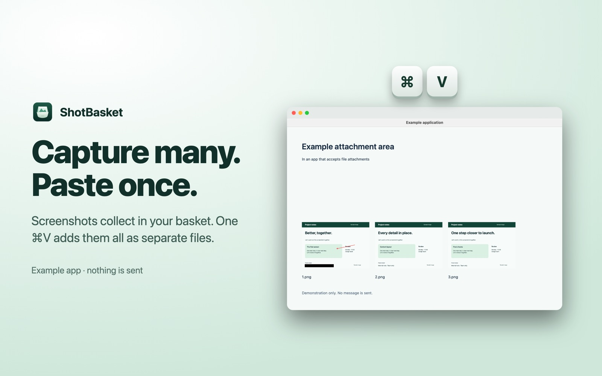
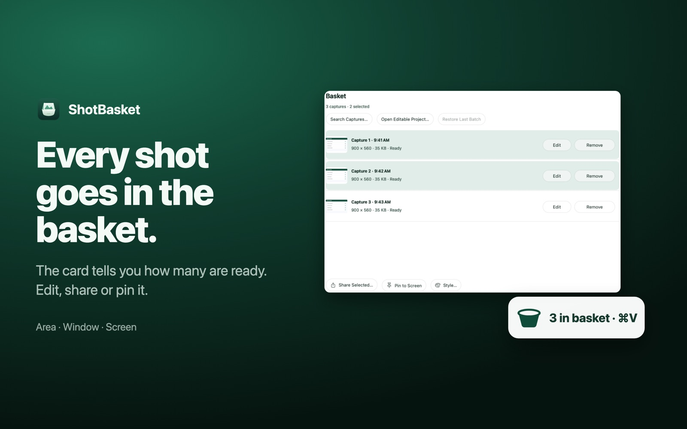
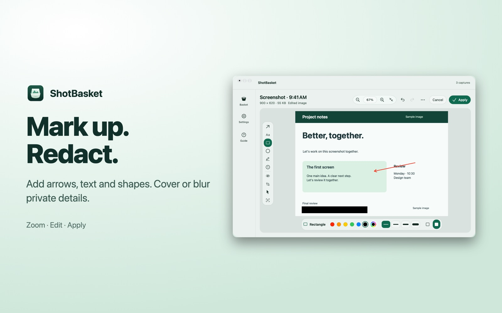
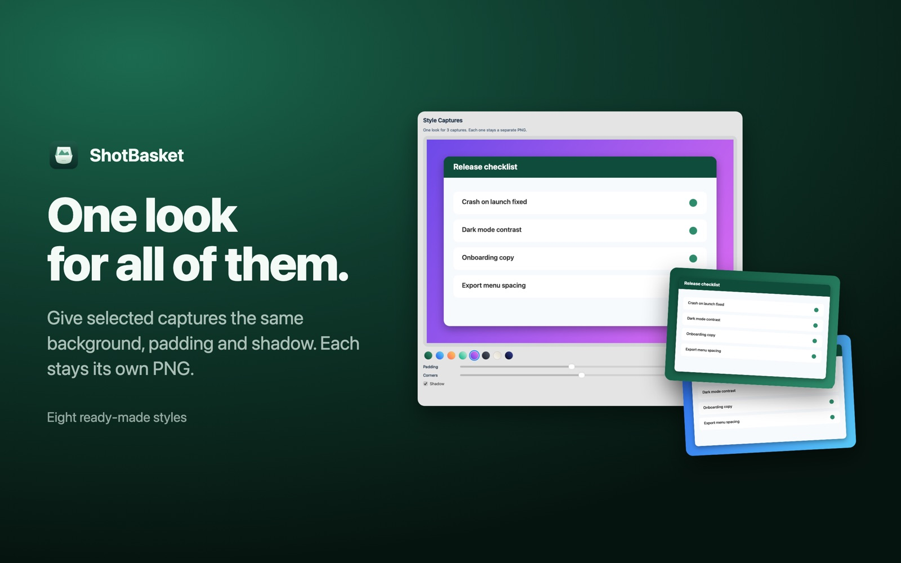
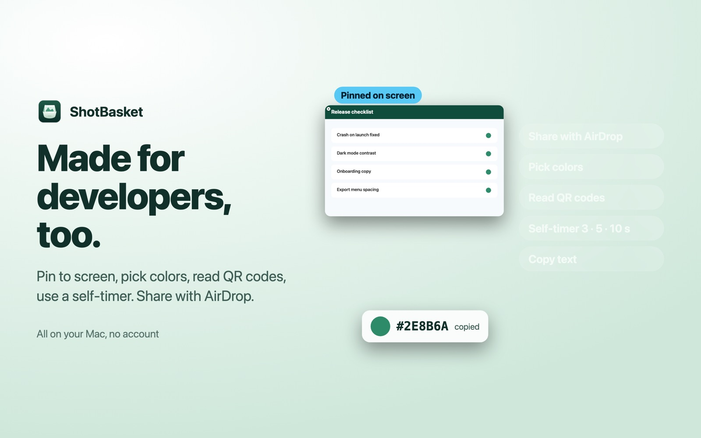
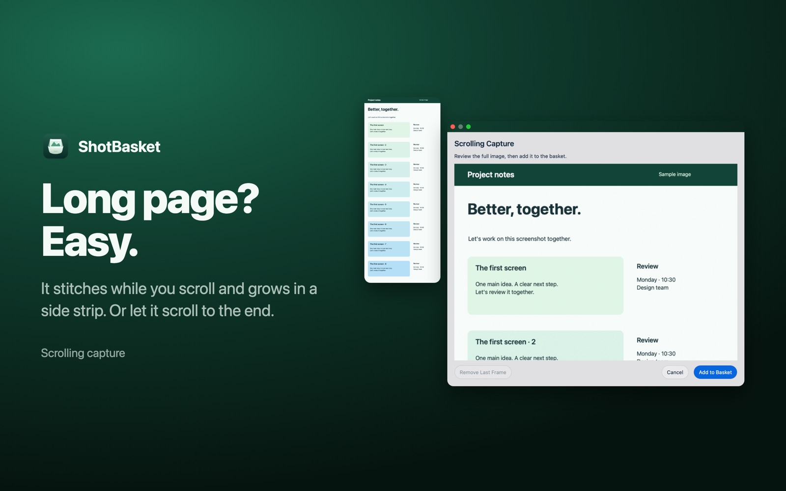
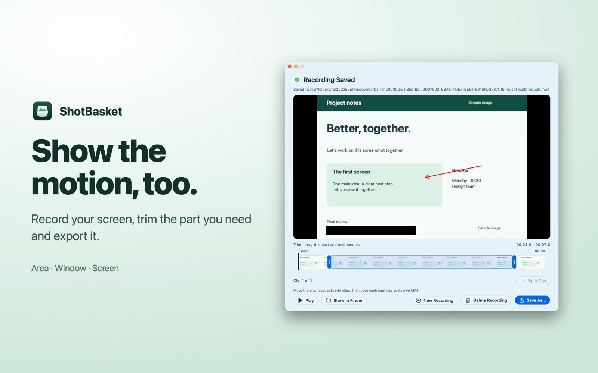

Screenshot basket for your Mac’s menu bar
Shoot many.Paste once.
Take all the screenshots you need. They wait in a basket. Then one ⌘V drops every one of them into your message as a separate file, in the order you took them.
- One-time purchase
- No subscription
- No account
- Works offline
The problem
Your clipboard holds one image. Your message needs five.
Every new screenshot replaces the last one. So you capture, switch to the chat, paste, switch back, and do it all again. ShotBasket lets you capture everything first and paste once.
Five screenshots, the usual way
19steps
- Capture
- Switch
- Paste
- Back
- Capture
- Switch
- Paste
- Back
- Capture
- Switch
- Paste
- Back
- Capture
- Switch
- Paste
- Back
- Capture
- Switch
- Paste
Nine of those steps are just switching windows.
Five screenshots with ShotBasket
7steps
- Capture
- Capture
- Capture
- Capture
- Capture
- Switch
- ⌘V
Every image arrives as its own file. Nothing is merged, nothing is sent until you press Send.
See it work
Real screens. Real shortcuts.







The toolkit
Everything between capture and paste.
Mark up
Arrows, text, shapes and numbered steps.
One look for all
Same background and frame on every capture.
Scrolling capture
A whole page as one tall image.
Screen recording
Record, trim, split, save as MP4.
Copy text and QR
Read text and QR codes, on your Mac.
Pin to screen
Keep a capture floating while you work.
Color picker
Any pixel on screen to a HEX code.
Self-timer
Take the shot a few seconds later.
AirDrop and Share
Send one capture or the whole basket.
Drag anywhere
Drop a capture into any app or browser.
Privacy
Nothing leaves your Mac.
Network connections
ShotBasket never connects to the internet. Your screenshots can’t leak from a server that doesn’t exist.
Accounts
Open it and start capturing. No sign-up, no login, no email.
Trackers
No analytics, no ads, no telemetry. What you capture is your business.
Which permissions macOS will ask for, and why
- Screen Recording
- To take screenshots and screen recordings. Newer macOS versions call it Screen & System Audio Recording.
- Accessibility
- For the capture shortcuts and for pasting the basket with ⌘V. On macOS 27 it is called Device Control and Data Access.
- Microphone (optional)
- Only if you want your voice in a screen recording.
Price
Pay once. Keep it.
No subscription, no account, no in-app purchases. Buy ShotBasket once and get its updates through the Mac App Store.
$9.99
One-time purchase
- Unlimited captures, one ⌘V for all of them
- Editor with arrows, text, blur and crop
- Scrolling capture and screen recording
- Copy text, QR codes, pins and color picker
- macOS 13 or later, Apple silicon and Intel
- English and Turkish
Price in US dollars. The App Store shows it in your local currency.
Questions
Before you buy.
Which apps can I paste into?
Any app or web page that accepts files when you paste: mail, chat apps, notes, issue trackers and most upload fields. Each app decides how it shows the files.
Does ⌘V change everywhere?
Only while screenshots are waiting in the basket. When the basket is empty, or when you pause ShotBasket from the menu bar, ⌘V is the normal Mac paste.
Does it send messages for me?
No. ShotBasket pastes the files into the field you clicked. It never presses Return and never sends anything.
Where are my screenshots stored?
In ShotBasket’s own folder on your Mac. A capture that leaves the basket is deleted after the delay you choose, never sooner than ten minutes. Turn on Save Screenshots to Folder to keep permanent copies.
Is there a free trial?
The Mac App Store has no trials for paid apps. If ShotBasket isn’t right for you, you can ask Apple for a refund at reportaproblem.apple.com.
Is there an iPhone or Windows version?
No. ShotBasket is made for the Mac.